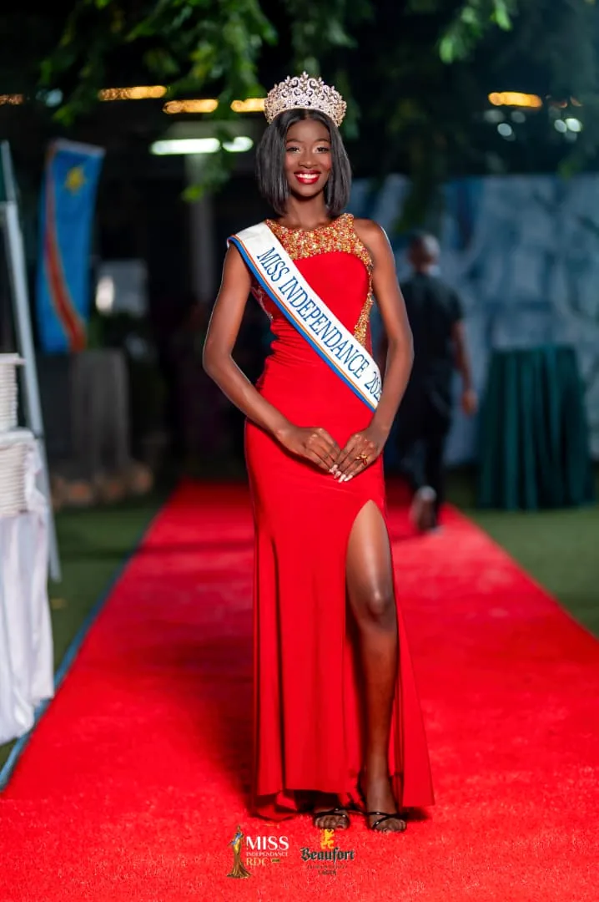

Les instants qui restent
Nos Souvenirs
Une couronne, des visages, une histoire partagée. Revivez les images qui ont fait vibrer Miss RDC.

Un héritage vivantLa mémoire
La mémoire
de la couronne
Des rencontres, de l’élégance et une même fierté congolaise.
Galerie
Regardez nos plus beaux moments
Cliquez sur une image pour l’agrandir